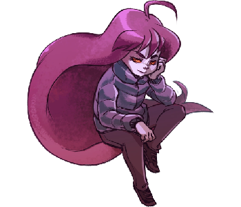
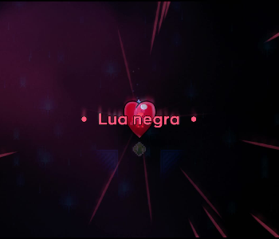
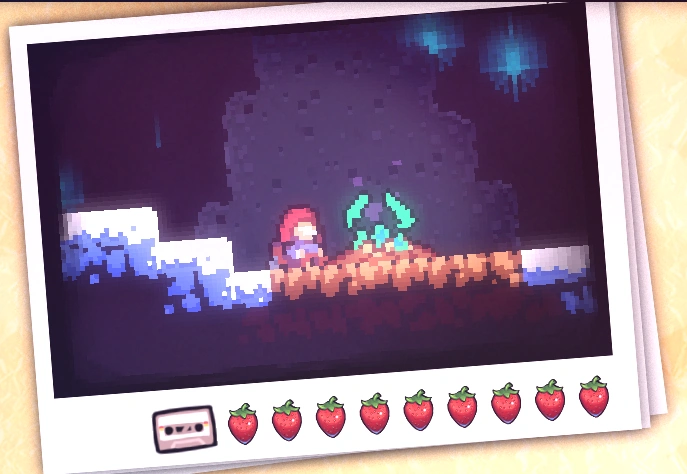
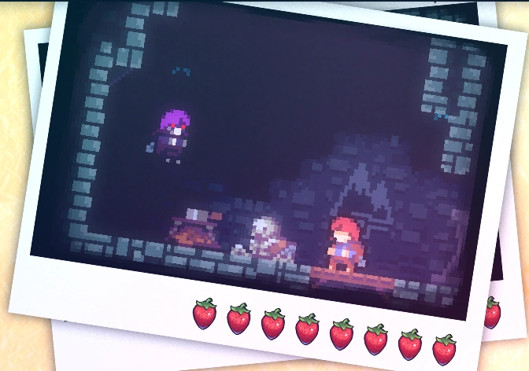
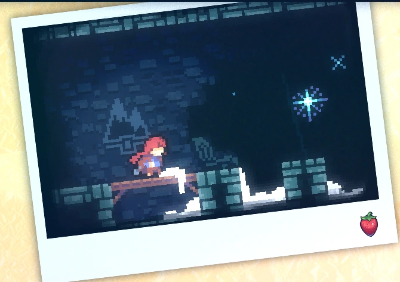

Chapter 2: Old Site
Old Site is the second chapter of Celeste. It introduces new mechanics, making the game more challenging.
Mechanics
Plot
Old Site introduces 1 new character:
• Badeline.
Madeline wakes up to discover mysterious changes around her: the campfire flames have turned green, blue lights descend from the sky, and the text on the Celeste Memorial is rearranging randomly. Upon leaving the memorial, Madeline explores the area and finds a large mirror. In it, she sees her reflection altered. After an intense chase with her reflection, which reveals itself as a part of her, Madeline answers a payphone. In a confusing conversation with a green-haired boy, she realizes she's dreaming. Her reflection advises her to give up, the phone transforms into a monster, and it devours her. Waking up at the Celeste Memorial, everything returns to normal. Madeline meets Theo, talks to her mother using the phone again, and seeks comfort after the surreal experience of her dream.
Dialogues
Collectibles
Crystal Heart:
The Crystal Heart in this chapter is in the first sub-chapter, "Start" of Chapter 2. Theoretically, it's easy to find, just two screens above the start. However, in practice, it's challenging, requiring the exploration of a dash recharge mechanic between screens. Many consider this one of the hardest Crystal Hearts to find without a guide since the mechanic is not directly taught in the game. There are two main ways to reach it: one involves "air climbing" by exploiting dash recharge, and the other requires precise maneuvers when jumping and shifting on the second screen. Both methods lead to the top, where the Crystal Heart, titled "Resurrections," can be obtained.
Cassette Tape:
The cassette tape in Chapter 2 is acquired in the first sub-chapter after accessing a secret
passage. In the cassette tape room, rhythmic platforms are found. After reaching the
goal, a
bubble transports the player back to the beginning of the room.
- See: how to find...

Strawberries:
• Golden Strawberry:
Obtained after completing the stage while holding the golden strawberry. Can only be achieved after completing Chapter 8's B-Side.
• Red Strawberry:
Strawberry 1: Red Strawberry:
Strawberry 2: Red Strawberry:
Sub-Chapters
Old Site has 3 sub-chapters:
Start
Intervention
Awake
